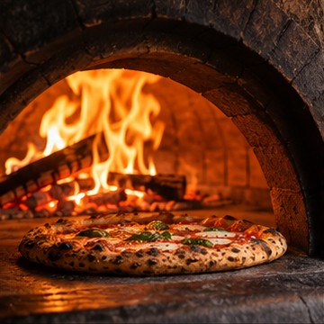
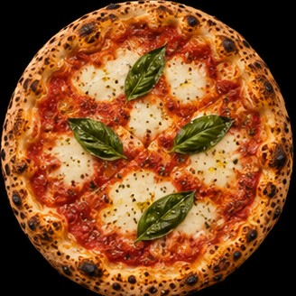

Nossa história
Uma paixão que nasce do fogo.
Na FORNATTO, acreditamos que uma grande pizza começa muito antes de chegar ao forno. Nossa inspiração vem da tradição italiana, do respeito aos ingredientes e da paixão por compartilhar momentos especiais.
- Massa de fermentação lenta
- Ingredientes selecionados
- Preparo artesanal

